01 前期定金与项目关联
财务：项目账本 → 新建前期客户账本 → 登记其他收款 → 上传凭据 → 修订收款 → 关联工程 → 抵扣合同款
定金先登记5,000元，再按银行实到修订为5,200元；关联项目及抵扣期款只改变归属，不重复生成收款。
查看过程页面已验证面向8—10人的乡墅公司，验证日常记账能否顺利完成，并核对业务、工程、财务与老板是否看同一套数据。
本报告列明的财务核心链路已完成操作验证、问题修复及对应复测。首页大框架保持原确认样式，继续复用现有收款、应付、付款、报销、退款和账本接口。
前轮修复7类业务 / 界面问题，页面与接口补测另修复4类问题，最新屏幕适配补测再修复1项顶部遮挡问题。新测试项目最终收支结余为21,560元，项目费用4,450元，待付和员工往来均为0；业务与工程合同净收26,010元，老板账本与财务账本一致。首页仍有2项此前验收场景的未结事项，未为美化截图而删除。
按最新确认，在微信开发者工具中继续验收，不连接手机投屏。以下为本轮新增证据，前轮完整业务链路与结果仍保留在后文。
| 链路 | 实际操作 | 结果 |
|---|---|---|
| 收款 | 验收账本 → 登记收款20元 → 选择图片 → 保存 → 返回原账本 | 通过；收款及凭证真实入库 |
| 付款 | 原账本 → 登记付款 → 补记服务费5元 → 聊天文件 → 保存 → 返回 | 通过；公司实付5元，费用5元 |
| 垫付与报销 | 原账本 → 员工已垫付6元 → 自动生成报销事项 → 报销6元 → 返回列表 | 通过；费用只计6元，报销计公司实付，员工往来结清 |
| 退款 | 收款明细 → 登记退款2元 → 关联凭证 → 保存 → 返回原账本 | 通过；沿原收款登记，不触发真实转账 |
| PDF补充 | 原收款 → 补充PDF → 保存 → 原记录查看 → 真实下载接口 | 通过；正确返回PDF格式及文件字节，不新增资金记录 |
| 返回项目 | 原项目费用标签 → 收款/付款表单 → 注入键盘事件 → 返回项目账本 | 通过；项目、费用标签和原项目金额均保留 |
| 问题 | 修改前 | 修改后 | 验证方式 |
|---|---|---|---|
| M01 凭证来源 | 财务原入口仅能选择聊天文件，纸质凭证或手机截图要绕路。 | 收款、付款、报销、退款及补充凭证统一提供拍照/相册和聊天文件；取消不清除已有凭证；选择失败显示可处理的提示。 | 代码检查、选择器回调测试、真实PNG上传与财务登记 |
| M02 异步回填 | 选文件后返回、换单或切换身份，旧选择结果可能回填到后开的表单。 | 校验会话、单据来源、表单代次和选择顺序；过期回调直接忽略，沿用已有登记接口。 | 取消、换原单、换岗位与连续选文件回归通过 |
| M03 PDF格式识别 | 上传仅按临时路径后缀推断格式，无扩展名PDF会被当作JPEG。 | 上传同时传递原文件名，以原文件名确定MIME；票据、字节上传、完成、原单关联及下载链路不变。 | 真实PDF临时文件不带扩展名；下载返回application/pdf且字节以%PDF-开头 |
| M04 键盘与底部导航 | 财务固定底部导航未监听键盘，输入框未统一设置键盘间距。 | 键盘弹起时隐藏底部导航，收起后恢复；39个输入框设置24px光标间距；返回账本主动收起键盘，页面隐藏/卸载释放监听。 | 真实页面回调注入280/300px键盘事件及逻辑回归；未模拟系统键盘外观 |
新增独立验收账本：收款20元－公司付款5元－报销6元－退款2元＝现金结余7元；项目费用口径为5＋6＝11元。员工垫付没有直接计入公司现金支出，报销没有重复增加费用。
原“李先生乡墅·全流程验收”项目仍为结余21,560元、费用4,450元，业务和工程净收26,010元，老板与财务一致。全公司测试数据结余由110,878元增加至110,885元，增量全部来自本轮独立验收账本。
| 项目 | 本轮证据 | 结论 |
|---|---|---|
| 390×844模拟器 | 系统返回platform=devtools，model=iPhone 12/13 (Pro)，基础库3.17.4；以下为原生运行截图 | 已完成页面检查 |
| 键盘事件 | 注入280/300px高度，验证导航隐藏恢复和账本返回；输入值未丢失 | 事件处理通过；不作为手机输入法遮挡的实机结论 |
| 320×568 / 430×932模拟器 | 后续适配补测已切换iPhone 5与iPhone 15 Pro Max，真实systemInfo、页面截图及元素位置均已记录 | 22项通过；修复账本滚动顶部遮挡，详见小屏与大屏适配补测报告 |
| 系统相册/相机/聊天选择 | 由自动化提供真实测试文件和系统选择回调；未调用真实手机相机 | 选择后的页面、上传、关联、取消及错误处理已测 |
| 金融与环境 | 独立本地测试库和测试账号，所有收付均为测试登记 | 未连接银行、未发生实际转账、未发布生产 |


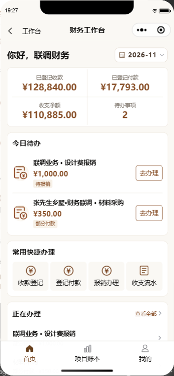

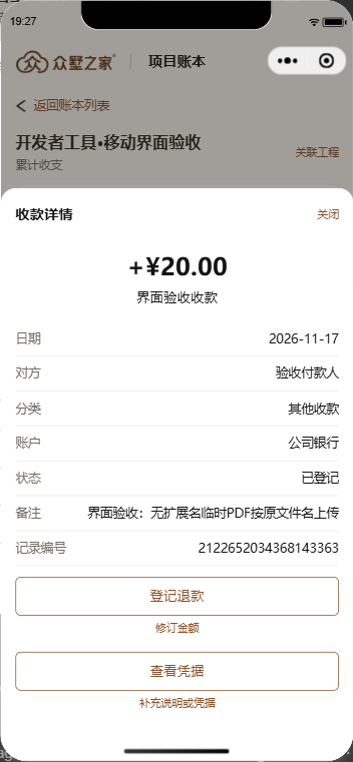
| 序号 | 检查项 | 结果 |
|---|---|---|
| 1 | 收款选择相册/拍照来源，经真实资产接口上传并登记20元，成功返回原账本 | 通过 |
| 2 | 键盘高度事件300→0：底部导航隐藏恢复，金额与账本保留 | 通过 |
| 3 | 公司付款5元与员工垫付6元分别登记，聊天凭证上传，返回原账本 | 通过 |
| 4 | 员工垫付生成报销，原应付登记6元报销、上传凭证，返回报销列表 | 通过 |
| 5 | 沿原收款登记2元退款并上传凭证，返回原账本 | 通过 |
| 6 | 5笔实际登记均关联服务端凭证；新账本结余7元、费用11元，员工垫付与报销不重复计成本 | 通过 |
| 7 | 原项目收付款表单在键盘状态下返回，保持项目、费用标签和原金额 | 通过 |
| 8 | 临时文件无扩展名的PDF补充上传，经真实票据、上传、完成、下载接口校验PDF字节和格式 | 通过 |
本轮按要求直接使用微信开发者工具模拟器，分别切换 iPhone 5（320×568）和 iPhone 15 Pro Max（430×932），每个尺寸完成11项检查，共22项通过。加上前轮390×844，财务页面已覆盖小、中、大三个屏幕尺寸。
| 机型 | 实际屏幕尺寸 | 基础库 | 验证方式 |
|---|---|---|---|
| iPhone 5 | 320×568 | 3.17.4 | platform=devtools；原生页面截图与渲染元素位置 |
| iPhone 15 Pro Max | 430×932 | 3.17.4 | platform=devtools；原生页面截图与渲染元素位置 |
桌面机型下拉控件捕获超时，改为修改该隔离项目在开发者工具中保存的机型配置并重新编译。随后读取模拟器真实 systemInfo 核验尺寸；未模拟 systemInfo，也未用缩放图片代替机型切换。
| 链路 | 本轮操作 | 小屏 / 大屏结果 |
|---|---|---|
| 财务首页 | 问候与月份 → 四项指标 → 今日待办 → 快捷办理 → 正在办理 | 金额128,840.00、17,793.00、110,885.00完整；可滚动到达所有模块 |
| 项目收款 | 原项目费用明细 → 登记收款 → 输入1234567.89 → 滚动至确认按钮 → 返回项目账本 | 输入值完整；按钮可见；保留原项目与费用标签；取消未新增入账 |
| 采购付款 | 首页材料采购待办 → 自动带入原采购及剩余350.00 → 滚动至登记按钮 → 返回首页 | 合计500、已付150、待付350一致；不需重复选原单 |
| 补记付款 | 项目账本 → 登记付款 → 没有原单，补记其他支出 → 返回项目账本 | 提交按钮无遮挡；保持原项目和费用标签 |
| 设计费报销 | 报销列表 → 原垫付事项 → 待报销1000.00 → 底部确认按钮 → 返回列表 | 垫付2400、已报1400、剩余1000正确；返回原列表 |
| 退款 | 原收款流水 → 登记退款 → 查看剩余可退18.00 → 底部按钮 → 返回原账本 | 沿原收款办理；不需重新选择账本；取消后结余不变 |
| 凭据入口与键盘事件 | 表单滚动到底部 → 凭据入口与提交按钮可见；注入280px键盘事件 → 返回原项目 | 导航隐藏恢复，项目与标签保留；文件真实上传沿用前轮已验证结果 |
| 账本滚动与老板衔接 | 项目账本 → 滚动至最后一条流水 → 固定顶部导航 → 切老板账本核对 | 顶部流水不再穿过胶囊；最后一条流水在底栏上方；老板与财务结余均21560 |
| 问题 | 修改前 | 修改后 | 复测 |
|---|---|---|---|
| S01 账本滚动顶部遮挡 | 品牌导航随内容滚走，金额进入胶囊按钮下方 | 增加可选fixed属性及等高占位，只在财务常规标题启用；报销/收付款操作标题沿用原固定方式 | 两尺寸滚动后标题top=0；最后一条流水可完整显示；老板账本共享修复 |
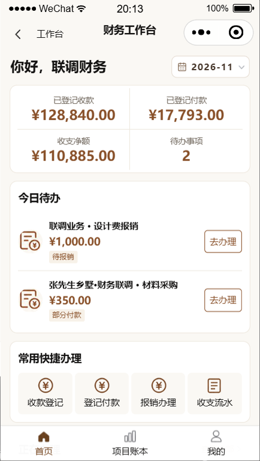


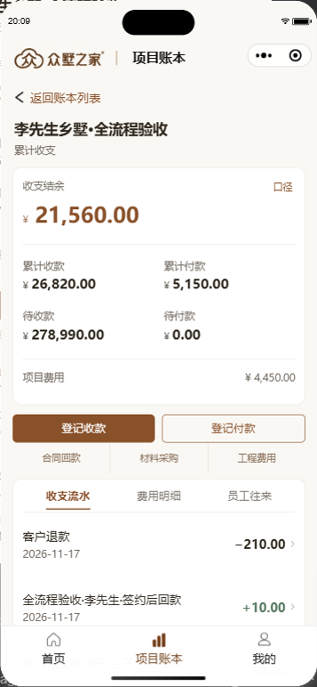
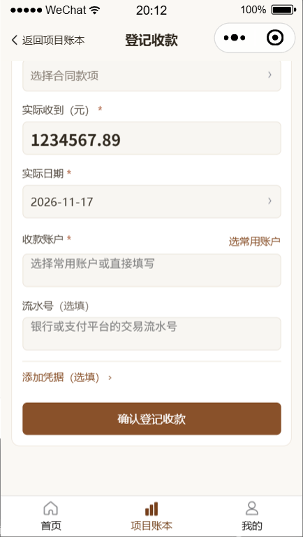
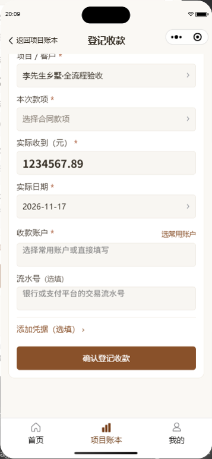
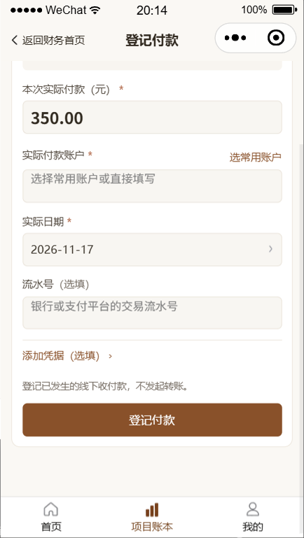


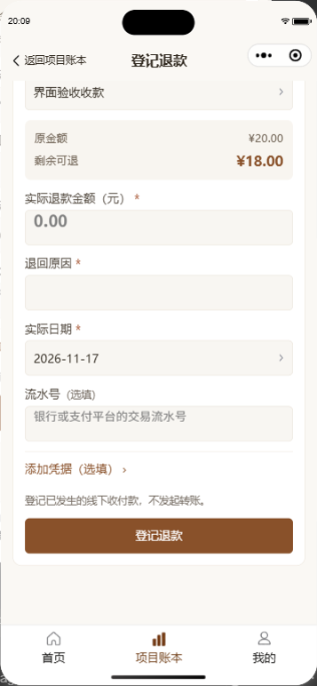

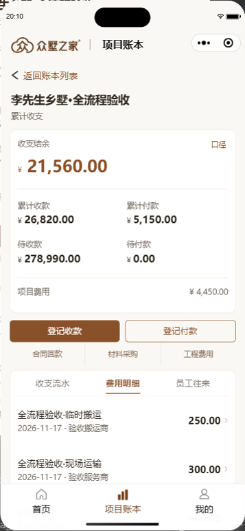

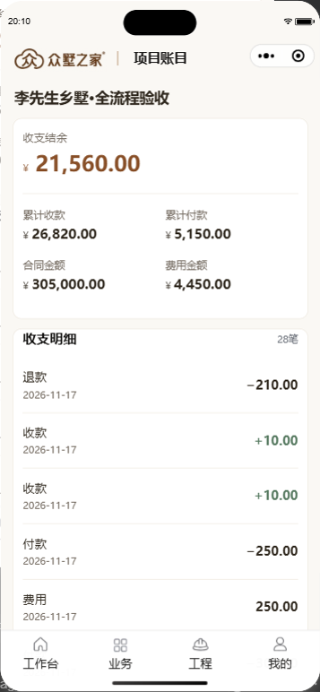
| 检查项 | 小屏 | 大屏 |
|---|---|---|
| 实际模拟器机型、首页六位金额与指标卡边界 | 通过 | 通过 |
| 收款金额输入、滚动至提交按钮、返回原项目费用标签 | 通过 | 通过 |
| 付款与补记支出入口、提交按钮完整显示、返回原项目费用标签 | 通过 | 通过 |
| 设计费报销原单、提交按钮、返回报销列表 | 通过 | 通过 |
| 退款沿原收款进入、提交按钮、返回原账本 | 通过 | 通过 |
| 键盘高度事件中返回账本，底部导航恢复，项目与标签保留 | 通过 | 通过 |
| 老板只读账本金额与财务一致 | 通过 | 通过 |
| 工程采购待办直达原应付350元、提交按钮无遮挡、返回财务首页 | 通过 | 通过 |
| 项目账本金额与最后一条流水可见，不被底部导航遮挡 | 通过 | 通过 |
| 账本滚动后顶部导航固定，流水不再穿过微信胶囊区域 | 通过 | 通过 |
| 首页快捷办理与正在办理可滚动到达 | 通过 | 通过 |
本轮仅打开、输入并取消表单，没有新增收付款。全公司结余110,885元，原项目结余21,560元、费用4,450元，独立验收账本结余7元，均未改变。29项跨岗位金额/权限复核、29项财务前端回归、33项导航回归、共享头部/确认弹层检查及935个WXML表达式检查通过。后端本轮未改动，88项后端测试沿用前轮记录。
另外修复了测试运行器的Windows路径兼容问题：原先用斜杠匹配路径，无法展开action-panel；现统一路径分隔符，共享组件检查已复跑通过。报销列表及原生文本节点选择器也已更正。这些属于测试执行问题，未计为产品缺陷。
此处是开发者工具的真实机型渲染，不是实体手机。键盘检查验证页面高度回调、导航隐藏和返回恢复；不宣称验证了手机输入法的实际弹出外观。相册/相机选择回调及真实上传链路的范围见前轮报告。本轮不重复写入财务登记，也不重复声称进行了银行转账。
每条链路均区分业务来源、财务登记和查询结果。退款、报销、付款都是对已发生线下资金往来的登记，不触发实际转账。
财务：项目账本 → 新建前期客户账本 → 登记其他收款 → 上传凭据 → 修订收款 → 关联工程 → 抵扣合同款
定金先登记5,000元，再按银行实到修订为5,200元；关联项目及抵扣期款只改变归属，不重复生成收款。
查看过程页面已验证业务：合同办理回款 → 财务：核实到账 / 退回补充 → 业务：查看退回原因、补充原金额申报 → 财务：确认到账 → 业务与工程刷新净实收
1,000元申报完成退回与确认；另用业务原生页面重复两轮10元链路。未核实前不计入实收，财务确认后才记一笔。
查看过程页面已验证项目账本 → 登记收款 → 选择合同期次 → 登记实际到账 → 合同金额变更 → 业务 / 工程 / 老板查看
直接收款20,000元；合同新增5,000元尾款，总额由300,000元变为305,000元；未来到账日期、缺少变更依据均被拦截。
查看过程页面已验证工程材料计划 → 财务补供应方、单价、运费及凭据 → 生成采购应付 → 公司付款400元 → 正在办理续付600元 → 供应商退回100元 → 原应付结算调整为900元
材料采购使用公司付款，页面不提供工程垫付选项；工程端最终显示应付900元、已付900元、待付0元。到货数量未做虚假补齐。
查看过程页面已验证工程登记现场劳务600元 → 填收款方及费用依据 → 挂接原应付 → 财务沿原单付款 → 工程查看费用和付款
工程成本与财务付款分别记录；支付后不再重复增加600元费用。
查看过程页面已验证设计费待办 → 登记业务已垫付2,400元 → 自动形成员工往来 → 报销1,000元 → 续报1,400元
垫付不进入公司实付；报销进入公司现金支出，项目设计费用仍只计一次。设计审批完成状态属于本轮前置测试资料。
查看过程页面已验证原垫付明细 → 平台退600元至原垫付员工 → 员工形成应归还600元 → 财务登记归还 → 公司补付原设计单600元
设计合同金额仍为2,400元，因此原应付恢复600元；员工归还后往来为零，公司补付后原设计费结清。员工收到的退款不直接算公司收入。
查看过程页面已验证项目 / 公司账本 → 登记付款 → 没有原单，补记其他支出；或待付事项 → 登记其他待付费用 → 调整结算 → 调整账本归属 → 付款
项目运输300元、公司办公86元分别归账；搬运待付200元调整为250元后转入项目并付款。
查看过程页面已验证原收款明细 → 登记退给客户200元 → 财务负责人作废重登210元 → 返回项目账本；误录付款10元 → 负责人撤销 → 原误录费用调整为0
退款登记记录已发生的线下退款，不在小程序发起转账；退款不超过原单可退余额。多次更正复测后最终仅一笔210元有效。
查看过程页面已验证收支流水 / 账本流水 → 查看原记录 → 补充说明或凭据 → 保存 → 回看原记录
说明与文件绑定原记录，不新增收付款；空补充内容被拦截，上传完成走实际资产接口。系统文件选择与临时文件保存边界由自动化模拟。
查看过程页面已验证首页右上月份 → 取消 / 确认 → 历史月；账本与流水搜索 → 清空；对账页 → 完成对账留痕
月份显示2026-11，取消不改变账期；切换历史月不清除待办。已核对2026-11的服务端对账事件1条。
查看过程页面已验证财务首页各指标 / 快捷办理 → 对应事项 → 原单办理 → 成功 / 取消返回原入口；老板打开项目账本只读查看
项目收付款返回保留原账本与费用标签。业务、工程、老板直接请求付款接口均返回403；老板页面没有财务输入框。
查看过程页面已验证| 编号 / 问题 | 修改前 | 修改后业务流程 | 验证 |
|---|---|---|---|
| F01 待办不够明确，办理绕路 | 设计待办出现FULL及编号，部分付款仍容易让人看到总额；“去办理”先到通用流水。 | 按原单显示项目、费用名称和剩余金额；首页、待办、正在办理直接打开原收款、付款或报销，保留原返回位置。已办结的旧待办不再打开空表单。 | 业主确认、材料续付、设计费垫付原生复测；任务匹配与已办结保护回归通过。 |
| F02 业务看不到收款退回原因 | 财务退回后，业务合同页仍只显示待回款，无法明确补什么。 | 合同接口返回本人待核实 / 已退回申报；合同页展示退回原因，重新提交预填原金额、日期和流水号。分期金额改为分行显示，避免按钮把文字挤成竖排。 | 两轮业务原生申报、退回、补充、财务确认完成；归属隔离与退回状态测试通过。 |
| F03 工程与合同约定不同步 | 工程页读取开工阶段保存的旧约定；合同增项和尾款可能未体现，催收仍可能使用工程留痕额。 | 工程收款和结算汇总读取统一合同期次，包含尾款；开工资金门槛读取最新约定，催收以统一净实收计算；已有施工事实不撤销。 | 四端金额核对通过；收齐、退款回缺、补收及合同变更后门槛/催收测试通过。 |
| F04 退款更正被详情遮挡，日期与来源难读 | 从账本明细进入“作废重登”，旧详情弹层仍在，且返回来源不完整；日期数组显示成逗号分隔，来源显示长编号。 | 确认更正后关闭旧详情，打开带原退款关联的表单，保存原项目与原标签作为返回目标；日期统一YYYY-MM-DD，来源展示项目与用途。 | 实际复现并截图；修复后再次作废重登，检查日期、来源和详情关闭，提交成功并返回原项目。 |
| F05 撤销后账本刷新不完整 | 付款撤销后只刷新通用资金数据，原账本详情与余额可能仍显示旧状态。 | 撤销成功后关闭详情，同时刷新资金、应付及当前账本。 | 10元误录付款撤销留痕；应付恢复后把误录费用调整为0，无残留待付。 |
| F06 采购按钮岗位文案不准确 | 财务自己录采购金额，按钮却写“保存付款信息，交财务办理”。 | 改为“保存采购金额”，继续复用原采购与财务付款链路。 | 采购凭据上传、应付生成、分次付款及结算复测通过。 |
| F07 兼容汇总接口漏合同收款 | 旧项目汇总仅按流水上的project_id统计，漏掉通过统一合同关联到项目的收款。 | 兼容接口的实收、退款和净已付复用项目账本同一聚合；保留其原待登记应收字段语义。 | 兼容接口与财务、老板项目账本交叉核对通过；新增HTTP契约测试通过。 |
重新构建后发现隔离数据库尚未应用仓库已有的消息中心946迁移，导致工程费用挂接应付在消息留痕时回滚。已在隔离库应用该迁移并补齐测试应用用户对新增表的权限，然后重走劳务费用链路成功。此项为本地测试环境与当前代码版本不一致，不混记为采购/记账业务算法缺陷。
执行中发生的选择器失效、月份组件重建、会话自动续期及金额显示格式断言问题，修正自动化后均续跑成功。原始执行错误保留在 执行异常记录，不会把这些错误冒充产品缺陷，也不会计为额外通过用例。
金额单位：元。新测试项目为“李先生乡墅·全流程验收”。全公司数包含此前验收数据，不能与单项目数直接相减解释为其他业务收益。
| 核对项 | 金额 | 说明 |
|---|---|---|
| 合同应收总额 | 305,000.00 | 已含5,000元增项尾款 |
| 业主合同净收 | 26,010.00 | 销售、工程一致；包含两轮10元原生复测 |
| 合同待收 | 278,990.00 | 合同总额减业主净收 |
| 项目累计流入 | 26,820.00 | 含员工归还600元；不等同于合同净收 |
| 项目累计付款 | 5,150.00 | 公司现金实付，包含报销 |
| 客户退款 | 210.00 | 旧退款及中间更正均作废 |
| 退回公司款 | 100.00 | 材料退款；退到员工的600元不计此项 |
| 项目收支结余 | 21,560.00 | 26,820＋100－5,150－210 |
| 项目费用 | 4,450.00 | 设计2,400＋材料900＋劳务600＋运输300＋搬运250 |
| 项目待付 / 员工往来 | 0.00 / 0.00 | 本轮新项目全部结清 |
| 全公司收支结余 | 110,885.00 | 包含历史验收数据；原场景增量21,474元，加界面补测7元 |
员工垫付2,400元、公司报销2,400元、平台退员工600元、员工归还公司600元、公司补付600元：公司实际承担设计费仍为2,400元，项目费用没有因报销再算一遍。项目“收支结余”是现金口径，不是利润。
只读核对还检查了：前期定金抵扣不新增实收、原退款及中间更正作废、最后一笔退款唯一有效、误录付款作废、兼容汇总接口一致，以及业务/工程/老板请求财务付款均返回403。
查看29项核对及接口结果| 岗位 | 日常操作 | 最少衔接 |
|---|---|---|
| 业务 | 业主付款后申报实际到账；设计费确已个人垫付时提供依据 | 退回原因直接在合同页查看，补充原笔资料后重提 |
| 工程 | 提材料计划、确认到货、登记劳务等现场费用 | 材料由公司付款；工程采购费用及付款结果沿原项目查询 |
| 财务 | 核实到账、记录采购金额、付款、报销、零星费用、退款、月末核对 | 优先从待办或原账本办理；已有原单直接支付，无原单再补记 |
| 老板 | 看项目收支、费用、待收待付及员工往来 | 与财务同源查询；小程序项目账本不提供财务录入按钮 |
本轮没有增加新的多级审批、重复建单或强制填写无关字段。财务登记前仍需核对实际银行/微信/现金凭据；后续若扩展发票、报税、工资核算，应独立规划，避免把日常收支页变成会计总账系统。
点击图片可查看原尺寸。截图来自本轮运行的小程序原生模拟器。
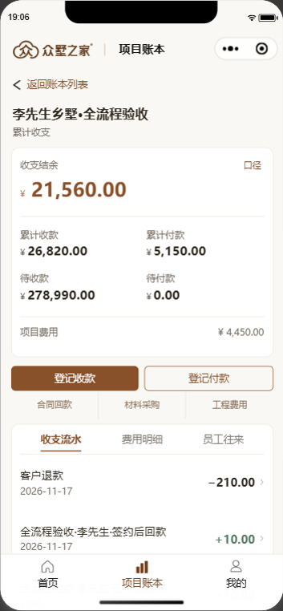
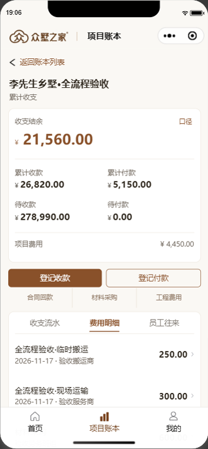
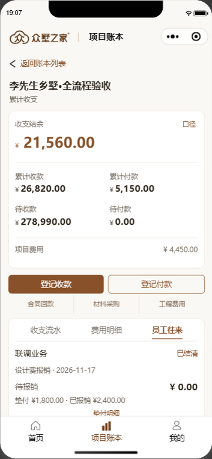
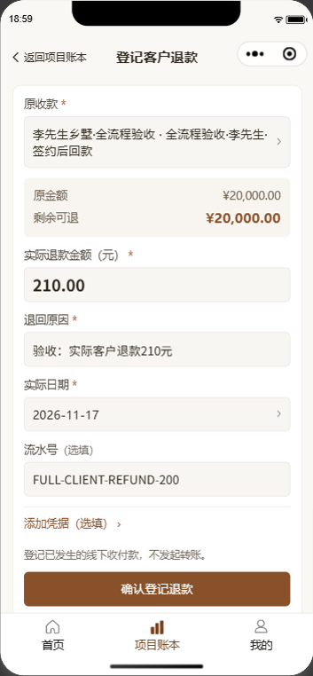
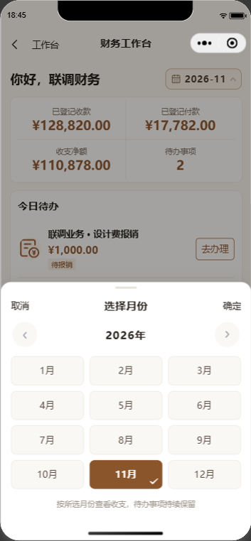
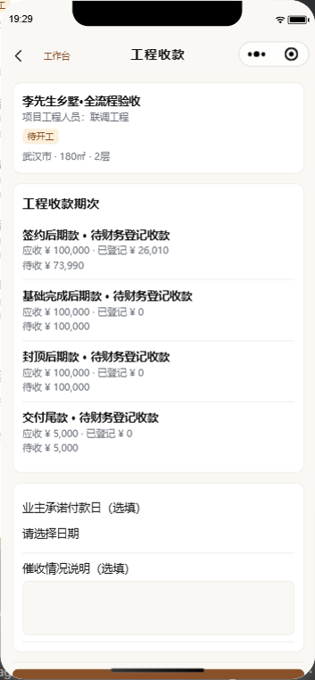
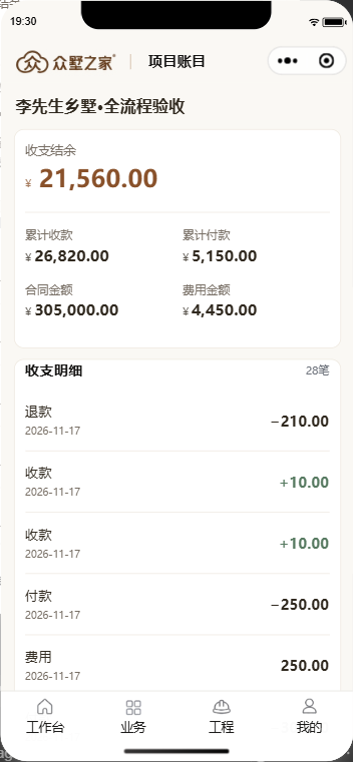
| 序号 | 检查项 | 结果 |
|---|---|---|
| 1 | 首页快捷流水进入实际收支 | 通过 |
| 2 | 流水、业主收款、待付事项、对账四标签切换 | 通过 |
| 3 | 账本四种分类可切换 | 通过 |
| 4 | 前期客户账本新建、空名称拦截 | 通过 |
| 5 | 账目口径可打开关闭 | 通过 |
| 6 | 前期定金登记、必填拦截、真实附件上传、成功查看原记录 | 通过 |
| 7 | 账本收款修订金额及原因、零金额拦截、返回原账本 | 通过 |
| 8 | 前期账本关联工程，已登记资金随项目归集 | 通过 |
| 9 | 项目账本合同回款入口 | 通过 |
| 10 | 项目账本材料采购入口 | 通过 |
| 11 | 项目账本工程费用入口 | 通过 |
| 12 | 首页到账待办直达原申报，退回必须说明原因，完成后返回首页 | 通过 |
| 13 | 业务补充后财务确认到账，仅生成一笔实收 | 通过 |
| 14 | 前期定金抵扣合同款，不重复增加实收 | 通过 |
| 15 | 合同增项及尾款同步，变更依据必填 | 通过 |
| 16 | 项目合同回款登记，项目与期次预选，未来日期拦截 | 通过 |
| 17 | 客户退款沿原收款登记，超过余额拦截，返回原账本 | 通过 |
| 18 | 业务合同与财务净收26000元一致，合同总额305000元 | 通过 |
| 19 | 工程材料计划由财务补采购金额，真实凭据上传，自动生成原采购应付 | 通过 |
| 20 | 材料公司付款400元，禁止工程垫付及超付 | 通过 |
| 21 | 正在办理直达原采购，剩余600元续付后结清 | 通过 |
| 22 | 采购退回100元并据实结算900元，沿原付款与原应付闭环 | 通过 |
| 23 | 设计费待办直达原单，业务垫付2400元自动生成员工报销 | 通过 |
| 24 | 设计费分次报销1000及1400元，项目费用不重复计入 | 通过 |
| 25 | 已报销后退至员工，生成应归还600元，归还入公司账并拦截超额 | 通过 |
| 26 | 原设计约定未变，退款后的600元沿原单由公司支付，员工往来结清 | 通过 |
| 27 | 工程登记劳务费用并挂接应付，由财务付款 | 通过 |
| 28 | 项目零星支出与公司日常支出分账登记，完成后返回原账本 | 通过 |
| 29 | 系统外待付费用登记、结算调整、账本归属和付款闭环 | 通过 |
| 30 | 流水补充说明与实际上传凭据，空内容拦截，原记录可回看 | 通过 |
| 31 | 更正遮罩问题复现，关闭详情后完成本次210元更正 | 通过 |
| 32 | 财务负责人更正退款，原记录作废留痕，按210元重登 | 通过 |
| 33 | 财务负责人撤销误录付款，留痕并恢复应付余额 | 通过 |
| 34 | 修复复测：业务原生页面申报→财务退回→合同页显示原因→预填原金额重新提交→财务确认 | 通过 |
| 35 | 修复复测：退款更正不再被旧详情遮挡，成功后返回原项目账本 | 通过 |
| 36 | 误录付款撤销后将原误录费用调整为零，无残留待付 | 通过 |
| 37 | 月份弹层取消与确认、YYYY-MM显示、历史月零值与待办独立 | 通过 |
| 38 | 账本搜索与流水搜索、清空筛选可用 | 通过 |
| 39 | 月末对账可核对净实收并留痕；电脑入口给出配置提示 | 通过 |
| 40 | 财务我的页面与工作台导航可达 | 通过 |
| 41 | 首页四个指标入口逐个打开，均到达对应业务列表 | 通过 |
| 42 | 首页全部快捷办理逐项可达 | 通过 |
| 43 | 底部项目账本导航进入账本列表 | 通过 |
| 44 | 收付款取消返回保留原项目及费用标签 | 通过 |
| 45 | 工程端四期应收、净实收与财务一致，材料结算及已付同步 | 通过 |
| 46 | 老板账本只读，与财务项目结余21560元一致 | 通过 |
| 47 | 更正表单日期统一YYYY-MM-DD，原收款展示项目与用途而非长编号 | 通过 |
| 测试集 | 通过数 | 失败 / 错误 |
|---|---|---|
| SaleContractThreeStageIntegrationTest | 15 | 0 / 0 |
| EngGateNetReconcileIntegrationTest | 3 | 0 / 0 |
| EngLaborExpenseIntegrationTest | 4 | 0 / 0 |
| EngMaterialAndPlanGuardIntegrationTest | 16 | 0 / 0 |
| FinWorkbenchIntegrationTest | 8 | 0 / 0 |
| FinancePageHttpContractTest | 42 | 0 / 0 |
前端29项测试单元通过（含回归脚本），935个财务WXML绑定表达式解析通过。旧回归脚本中依赖重复入口数量、旧回调文本的断言已更新到当前组件结构，同时保留收退款方向、金额上限、幂等、更正关联及返回行为验证。
| 范围 | 本轮情况 | 后续验收 |
|---|---|---|
| 物理手机、键盘与安全区 | 未连接真实iOS/Android设备；不能以模拟器替代实机结论 | 按用户要求已在开发者工具完成320/390/430屏宽检查；实体输入法与系统文件选择未作真机结论 |
| 附件选取与预览 | 模拟系统文件选择和临时保存结果；文件字节、上传票据、上传完成及记录关联真实执行 | 真机相册/相机/聊天文件与系统预览仍需验收 |
| 设计业务前置 | 使用已审设计委托资料作为前置；垫付、报销、退款、归还均实际操作 | 设计生产、审批、派单及总部实际收款不是本轮端到端范围 |
| 工程全生命周期 | 覆盖材料采购资金、劳务、合同期次、结算查询及相关门槛回归 | 现场质检、补发、所有施工节点、交付归档未在本轮逐页重跑 |
| 银行与外部资金 | 登记、对账和留痕已测；未连接银行，也未发生真实转账 | 真实银行导入/自动匹配、支付渠道另行集成验收 |
| 其他通用页面 | 财务“我的”和工作台导航可达；非财务内容未逐一办理 | 学习、商城等通用模块不计入本报告通过范围 |
| 全量软件故障场景 | 测试了必填、日期、超付、超退、权限、重复入账与更正；未在所有页面注入断网/崩溃 | 不将本报告宣称为全部终端、全部异常路径100%通过 |
以上边界不计为已通过事项。当前结论：已列明的财务链路、页面补测和跨岗位核对通过；按最新确认采用开发者工具验收。小屏320×568、中屏390×844、大屏430×932均已有原生页面证据，具体范围见补测章节。